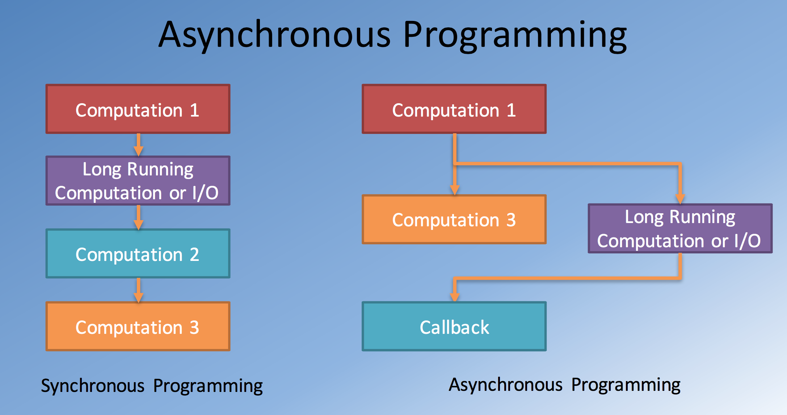
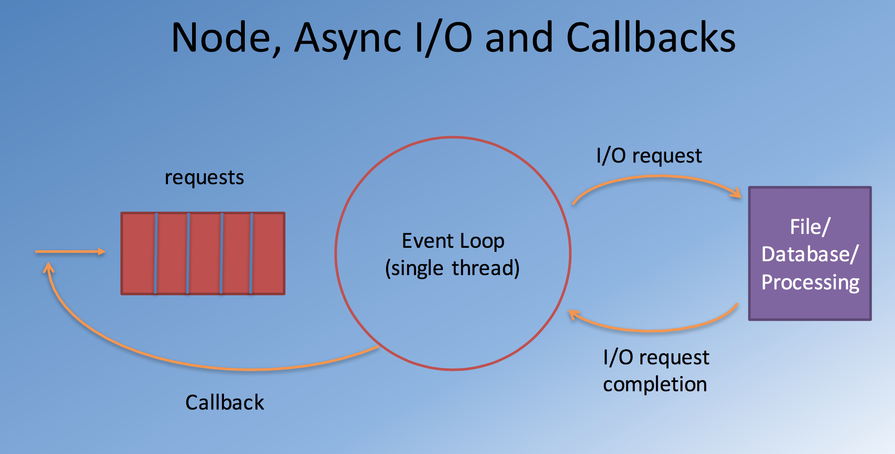

Node函数回调和错误处理(Callbacks,Error Handling)
当我们谈论JavaScript的时候，有两个显著的概念需要说明，我么在使用JavaScript的时候经常忽略这两个概念。
* 函数是一等公民(First-class functions):函数就像其他变量一样
* Closures：
- 内部函数能获取所在的外部函数的全部变量
- 即使外部函数已经运行结束了，内部函数依然能获取外部函数的变量，回调函数就是一个例子
在继续讨论回调之前，我们先了解一下异步调用：

同步调用容易阻塞进程，而异步就不会了。我们可以把Long Running的计算或者I/O操作交给回调函数去做。
异步I/O和回调又是如何实现的？

在Node环境中，有一个单线程的事件池（Event Loop），它不停地接收左边的requests，如果request包含I/O，那么它会交给一个回调函数，等输入结束之后回调函数再去处理I/)。
举个栗子：
新建一个文件rectangle-1.js
1 | module.exports = function(x,y,callback) { |
Node的惯例是回调函数的第一个参数一般是error。
然后再建立一个文件solveRect-1.js
1 | var rect = require('./rectangle-1'); |